What HighMemo does #
Saving never waits
The memo is on your device the moment you send it, and any tidying happens afterwards in the background. If that tidying fails, nothing you already had is erased. Share a link from any app and it lands as a memo — the title, summary and thumbnail fill in behind you.
How your memos relate
Memos that share a tag gather together, and the tag's name sits at the centre. Link two memos yourself — those links are never removed by an automatic rebuild. Folders, tags and pinning work with no account and no AI.
Organized once you connect an AI
Once an AI provider is connected, every memo you save comes back with a title, a summary, tags and a category.
Your schedule beside your memos
Connect Google Calendar and your schedule sits beside your memos — access is read-only, so HighMemo never creates, edits or deletes an event. Save a memo and HighMemo suggests the events it looks related to; you choose whether to link it. Open an event and choose Add memo to start a memo already attached to it.
Reminders that know when
Put a reminder on a memo — once, daily, weekly or monthly. Or pin a place instead, which is the next section.
Reminder notifications are delivered on iPhone and Android.
Your storage, not ours
Connect a Google account and your phone and Mac see the same memos. They live in your own Google Drive app-data folder — there is no HighMemo server and no HighMemo account, so we cannot look at them. Images and attachments travel too. Sync runs when you open the app and every 5 minutes while it is open, plus a button whenever you want.
Your AI, your key — or no AI at all
You bring the AI. Paste the API key of a service you already pay for and requests go from your device straight to that provider — there is no server of ours in between. Or pick a model that runs on the device itself: download it once and your memo text never leaves the device, with no internet needed. Or connect nothing at all and keep using the app.
Search, and an export you own
Type to filter by title, body or tag; #tag matches that tag exactly. Export everything as one JSON file, with your attached photos embedded in it.
Pin a place, and the memo comes back #
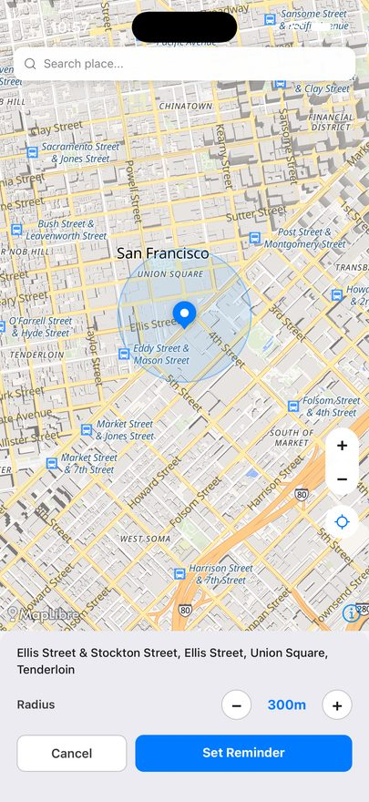
Arrival is decided on the device and the notification is created there too — it fires once per visit, not every time you move around inside the same place. Location reminders are delivered on iPhone and Android; the Mac app notices arrival only while it is open.
Dark and light #
Settings → Appearance is the first thing in Settings and it offers three choices: Dark, Light and System — and the choice applies to the whole app rather than to one screen. System follows your device, and it is what you get before you change anything. Your choice is remembered, and the same three are there on iPhone, Android and Mac.
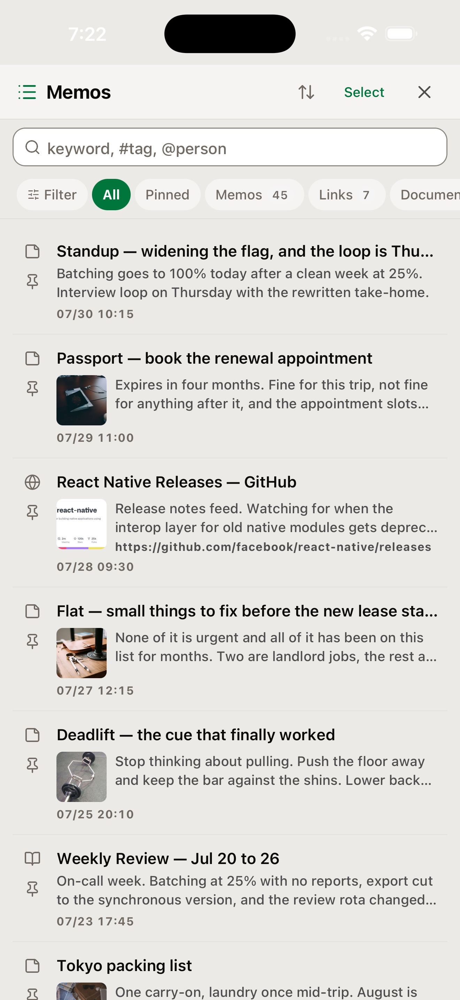
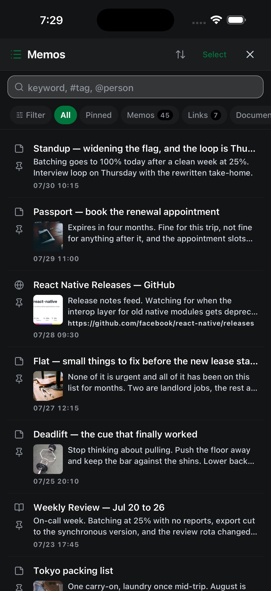
What it looks like #
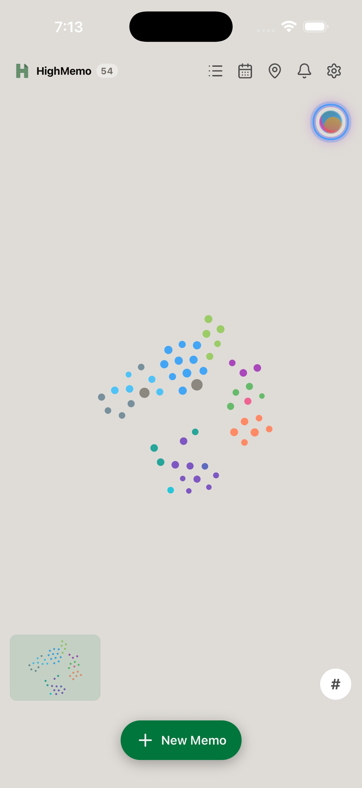
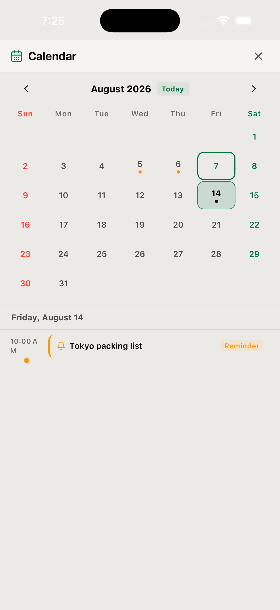
The latest screenshots use a separate simulator profile with fictional demonstration memos and local-only example events.
Android
The same library, ready in your pocket #
HighMemo uses the same fictional demo library on Android: browse the full memo list, open a saved link with its image and summary, return to the graph, or check a reminder in the calendar.
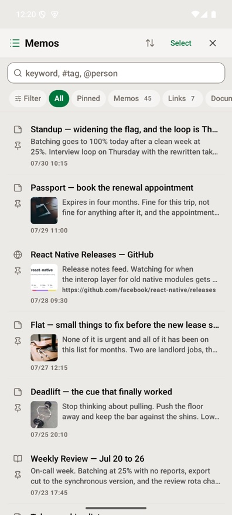
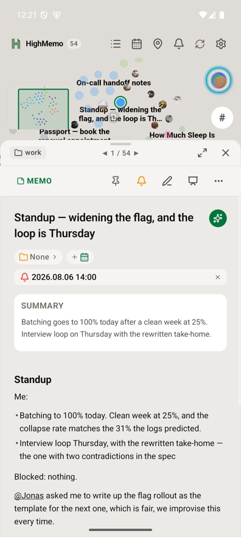
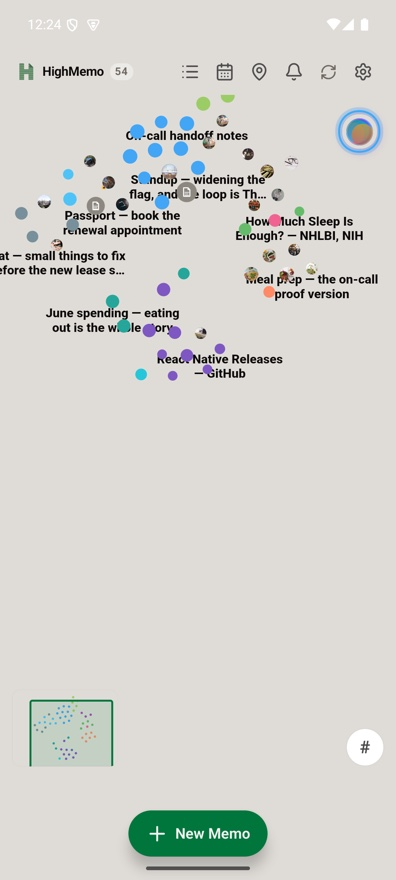
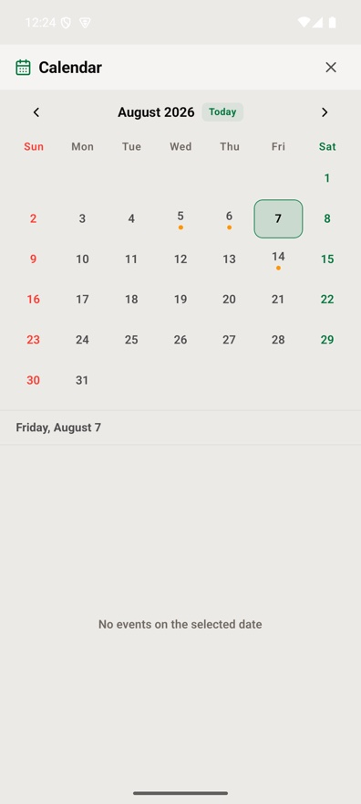
Find the thread again
Recommendations, not a dead end #
HighMemo can search by meaning once you download the optional on-device search model. A memo's Recommend section then surfaces notes that look similar, so an old idea can lead you back into the rest of the story.
Recommendations are suggestions. Related remains the list of links you chose yourself.
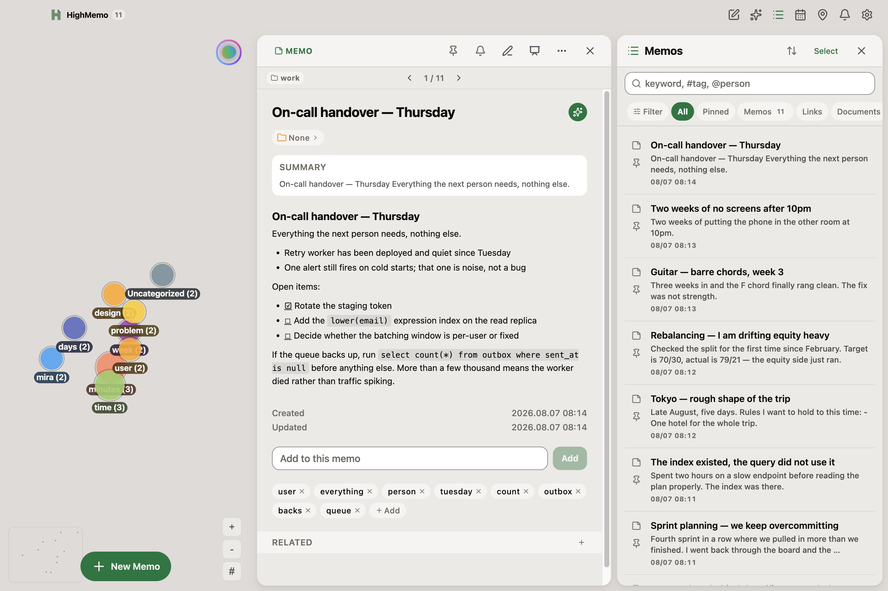
Read it as a story
A presentation view for exploring a memo #
Open a memo in Presentation View when you want its title, images, summary and structured text to take the page. It is a calmer way to revisit a saved article, plan or collection of ideas.
The same focused reading view is available on iPhone. At the end of a memo, Related keeps the links you chose and Recommend suggests semantically similar notes to explore next.
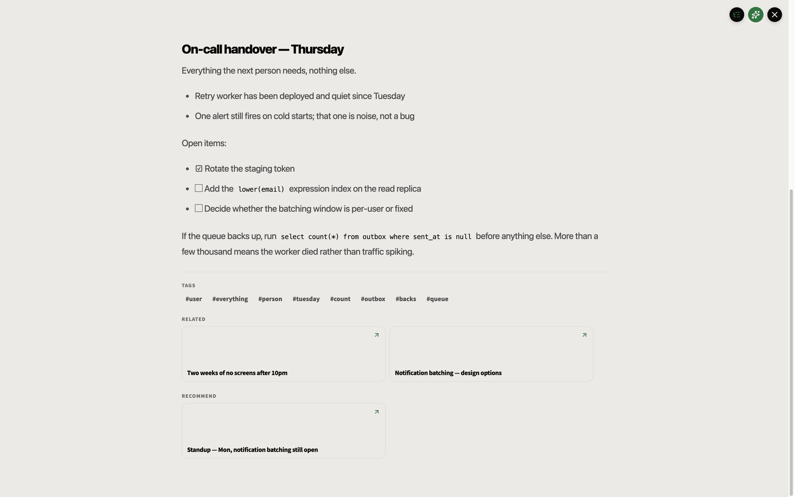
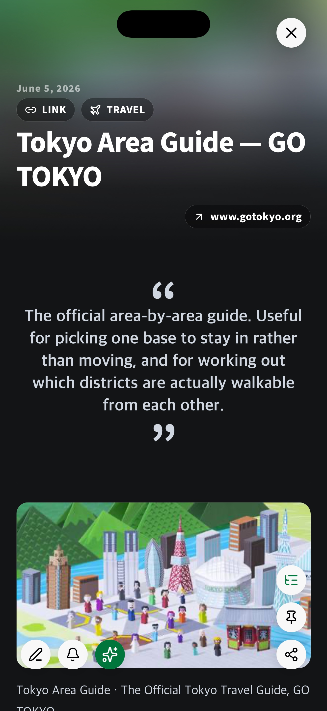
Mention a person or a memo #
A memo you mention stays linked even if you delete the mention. A person works the other way round — there the text is the record, so taking the name back out of the body takes the link with it.
On the Mac #
HighMemo on Mac is the same app in a window: the memo list, the memo you are reading and the graph can all be on screen at once. It shows no ads. Reminder notifications are not delivered on Mac — the Mac guide is explicit about which platform does what.
The Mac screenshots on this page use the same demonstration memos.
User guides #
Every feature, where to find it, and what it needs before it works. Pick your platform — the three guides differ where the app actually differs.
Get HighMemo #
HighMemo runs on iPhone, Android and Mac.
iPhone and Android
HighMemo is available for iPhone and iPad on the App Store. The Google Play release is not available yet.
Mac
HighMemo 1.1.0 supports both Apple Silicon and Intel Macs. Pick Apple Silicon for an M-series Mac and Intel for anything older — Apple menu → About This Mac tells you which you have.
What to expect the first time you open it
HighMemo for Mac is distributed from this page, not from the Mac App Store. macOS checks apps from outside the App Store the first time you open one, so opening it may take a moment longer than usual. If macOS refuses to open it, go to System Settings → Privacy & Security, scroll to the message about HighMemo, and choose Open Anyway.
The Mac app keeps itself up to date. It checks for a new version when it starts and every few hours after that, downloads one quietly in the background, and puts it in place the next time you quit and reopen. There is no update button and no prompt — you are never interrupted mid-sentence by one.
Windows
There is no Windows build to hand out yet — this button is disabled because the file does not exist, not because a finished download is being held back. When there is a Windows build, it will appear here.
Before you install #
- HighMemo shows ads. There is no paid or ad-free version. Ads appear in the memo list on iPhone and Android; the Mac app has none.
- On first launch HighMemo asks whether to download a small on-device search model (about 330 MB). The app works fully without it, and the Settings → Local AI download button is there if you want it later.
- Connecting Google for sync asks for app-data folder access and read-only calendar access together.
- Location access is requested only when a memo actually has a location reminder.
- The interface is in English. AI output follows the language of your memo, or a language you pick in Settings.
Most memo apps decide where your memos live and which AI reads them. HighMemo makes both of those your choice — and works before you choose either.